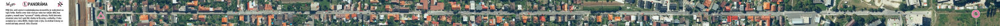

Panorama

Teams received one very long map. It was created by cutting and stitching aerial photographs of the route to form one continuous straight line (all turns were "straightend out").

The race course was 23 kilometers long, however the actual distance covered by the teams that reached the finish line was closer to 32 kilometers. It included 13 checkpoints. You can view the navigational challenges for each checkpoint below. The optimal route can be seen here. The challenges were printed in slovak language only. Starting 2024, english translation will also be available.
Teams received one very long map. It was created by cutting and stitching aerial photographs of the route to form one continuous straight line (all turns were "straightend out").

The map depicted only vineyard lines, with 8 stops marked out. At each stops, there was one drink and one food item. You would draw a straight line joining them into your map, and after plotting all the lines, four intersections were created. These just needed to be connected once again to obtain the location of the next checkpoint.

At the beginning of this checkpoint, you found two types of fabric wristbands with instructions to take two of each kind. By combining two wristbands, a map was formed showing the way forward.


This checkpoint utilized real historical boundary stones, which could be found in the forest. In the distant past, a road ran alongside them. Nowadays, following them required a bit of pushing through vegetation.
This map color-coded the orientation of the surrounding slopes. For example, north-facing slopes were green, while southeast-facing slopes were purple. However, it completely ignored how steep these slopes were; a gentle hill and a steep incline were represented the same way as long as they faced the same direction.

This map was inspired by schematic subway maps. It was a schematic representation of the road network, capturing all marked hiking trails, cycling paths, and forest roads. Since it was a schematic, the distances and directions depicted differed significantly from reality. However, most teams discovered a solution to this problem. Along the way, there was a big tourist map of the area at Malý Slavín, which could be used to determine the optimal route.

The teams were led to the next checkpoint by a series of intermediate stops. At each stop, they found a satellite image with the destination marked but the starting point missing. The location where the team was standing was visible on the map but not marked. The task for the participants was to identify their current position on the image and then make their way to the marked destination.


This task was similar to the previous one, with the route shown through a series of photos. However, this time the photos were not taken from space but from the ground. We took the photos ourselves, each time capturing the surrounding scenery. The goal was to find the exact spot from where the photo was taken and find the next photo there.

This map was detailed and generally quite nice. The only issue was that it was created sometime between years 1869 and 1887.

To continue further, you had to overcome a slackline obstacle. It required good balance and teamwork.

The next checkpoint was 1.4 kilometers away at an azimuth of 231 degrees (southwest). This time however, the teams did not receive any map, because they could clearly see the checkpoint on top of the Bazgovič hill above a former quarry. It was up to them to choose their route, but it was important not to get lost in the forest where the checkpoint was out of sight most of the time.


Teams were divided into two groups - narrators and drawers. The narrators received a map with the location of the next checkpoint and their task was to describe it to the drawers. The drawers couldn't see the map; they had to draw solely based on what the narrators told them. Then, they continued based on the drawn maps (or from memory).
At the last checkpoint, you found an envelope with five transparent sheets, each printed with layers of roads, waterways, contour lines, buildings, and land use categories. Your task was to identify the common features among them and overlay them correctly (for example, aligning rivers with valleys, roads with houses, etc.).